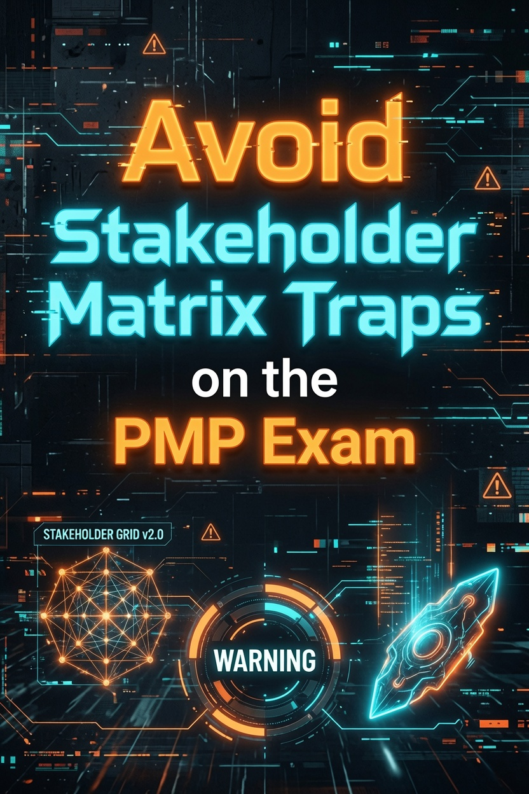

Avoid Stakeholder Matrix Traps on the PMP Exam

The stakeholder power/interest grid shows up on nearly every PMP exam. It's one of those topics that looks easy until you misread a quadrant label and lose a question you knew how to answer. The problem is not the matrix itself. It's the subtle way exam scenarios push you toward the wrong strategy when a stakeholder has high power but low interest, or when a new stakeholder appears halfway through the project.
Understanding the Power/Interest Matrix
The power/interest grid maps stakeholders on two axes. Power runs vertical (their ability to influence the project). Interest runs horizontal (how much they care about the outcome). The four quadrants each call for a different engagement strategy.
The grid looks like this:
Each quadrant maps to a specific engagement strategy. Get the mapping right and the stakeholder questions become straightforward. Get it wrong and you pick a plausible but incorrect answer.
High/High and Low/Low Quadrants
High Power, High Interest (Manage Closely). These are your project sponsors, steering committee members, and senior executives who have authority and want updates. They get frequent face time, detailed reports, and active involvement in decisions. Under-communicating with this group creates risk.
Low Power, Low Interest (Monitor). These stakeholders need minimal effort. A periodic status email or a summary note is enough. The exam will present scenarios where a stakeholder has almost no power and does not care about the project. The answer is "Monitor." Candidates overthink this one.
High Power, Low Interest
This quadrant is where the exam traps most candidates.
A stakeholder has high power -- they can block your project, redirect resources, or escalate to leadership. But they have low interest. They do not want to hear about milestones, risks, or team updates. They told you once: "Just tell me when it's done."
The trap: you see "high power" and reach for "Manage Closely." That feels right because powerful stakeholders seem like they need active management. But that is not what the grid says.
The correct strategy is Keep Satisfied. Give this stakeholder what they need to stay supportive, but do not flood them with detail. Over-communicating annoys a low-interest stakeholder. You risk turning a neutral into an opponent if you waste their time.
Think about a senior VP who authorized your project budget. She has power to cancel the project. But she has three other initiatives competing for her attention. She wants a one-page monthly summary, not a weekly status meeting. Treating her as "Manage Closely" would frustrate her. "Keep Satisfied" means you monitor her satisfaction level, address concerns promptly, and keep the communication lightweight.
Worried about other stakeholder scenarios? Download our FREE PMP Practice Test to see real example questions that test power/interest grid logic, stakeholder identification, and engagement planning.
Need a structured study plan? The PMP Exam Cracker covers all 7 Performance Domains, 6 Principles, key formulas, and exam strategy in 64 pages — with an 80-question practice test and annotated answer key.
Low Power, High Interest
The opposite quadrant: low power, high interest. These stakeholders care deeply about the project but cannot do much to help or hurt you. End users, subject matter experts, and team members from other departments often land here.
The strategy is Keep Informed. They want updates. They ask questions. Give them enough information to stay engaged without overwhelming them. They can become advocates or detractors based on how well you communicate, even though they lack formal authority.
On the exam, the low-power/high-interest stakeholder is usually straightforward. The trick is to recognize that "Keep Informed" involves active communication, not passive monitoring. You send them updates. You answer their questions. You do not ignore them just because they lack power.
Process Trap: Missed Stakeholders
Another common exam pitfall has nothing to do with the grid itself. It is about what happens when you discover a new stakeholder mid-project.
The PMBOK Guide treats stakeholder identification as an iterative process. You do not create the stakeholder register once and lock it. New stakeholders appear when your project impacts a new department, when regulations change, or when a previously silent party decides to speak up.
The exam rule: when you identify a new stakeholder, you immediately analyze them and update the register. You do not wait for the next planning phase. You do not defer. You assess their power, interest, and engagement level right away, then plan your approach.
Wrong answers on the exam include "defer analysis until the next stakeholder meeting" or "address it during quarterly planning." The correct answer is always "analyze and update the stakeholder register now."
Example PMP Question
Here is a question in the style you will see on the exam:
Question: A project manager is working on a system upgrade. The VP of Operations approved the project budget and has the authority to halt the project if problems arise. However, the VP has stated she only wants a brief monthly email update and does not want to attend status meetings. How should the project manager classify this stakeholder on the power/interest grid?
- Manage Closely
- Keep Satisfied
- Keep Informed
- Monitor
Answer: B. Keep Satisfied.
The VP has high power (she approved the budget and can halt the project) but low interest (she wants minimal updates and does not want to attend meetings). That places her in the High Power/Low Interest quadrant. "Keep Satisfied" means you give her the right level of information without oversaturating her. "Manage Closely" would mean frequent detailed communication, which contradicts her stated preference. "Keep Informed" is for low-power stakeholders. "Monitor" is for low-power, low-interest stakeholders.
The trap is the VP's authority. Her power makes "Manage Closely" tempting. But the interest dimension is just as important. Both axes determine the strategy.
Question: A project team is halfway through a software migration. During a demo, the head of IT security raises concerns about data handling and wants to be involved in all remaining decisions. The head of IT security was not in the original stakeholder register. What should the project manager do first?
- Add the head of IT security to the communication plan
- Analyze the stakeholder and update the stakeholder register
- Ask the project sponsor how to handle the situation
- Schedule a meeting to discuss the concerns at the next steering committee
Answer: B. Analyze the stakeholder and update the stakeholder register.
The head of IT security was not in your register. You must analyze them immediately. Assess their power, interest, and current engagement level, then update the register. Only after that do you plan communication (option A). Deferring (option D) or escalating (option C) without analyzing first violates the iterative stakeholder identification process.
Last updated: June 26, 2026